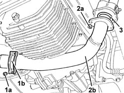
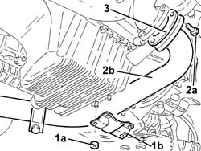
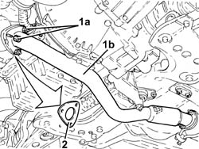
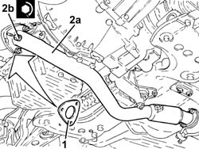

1076B58 exhaust pipe attachment to engine seal/s - replace
- Path
- Procedures > 10 ENGINE > 1076 EXHAUST PIPES AND SILENCERS > 1076B exhaust pipes and silencers > 1076B58 exhaust pipe attachment to engine seal/s - replace
- Kind
- repair procedure (removal / refitting; the operation number is the code)
- Applies to
- engines: 2.5 V6, 1.9 JTD 8v , 1.9 JTD 16v, 2.4 JTD 10v; all production periods
- Interactive page
- https://sloeber94.github.io/elrnDB-a156/en/#/3237574
Applies to: engines: 2.5 V6; all production periods
 Removing
Removing
 Refitting
RefittingPosition the vehicle on the ramp.
1. Undo the bolts (1a) and remove the lower collar (1b) of the exhaust pipe flexible mount.
2. Undo the nuts (2a) and disconnect the exhaust pipe (2b) as much as necessary.
3. Remove the exhaust pipe attachment to the engine gasket.

Applies to: engines: 2.5 V6; all production periods
Refitting
RemovingFit a new gasket for the exhaust pipe attachment to the engine.
Tighten the nuts securing the exhaust pipe to the engine to the specified torque.
 | Fastening | Component | Ø | Value (daNm) |
|---|---|---|---|---|
- | Nut | EXHAUST PIPE FROM MANIFOLD | M8 | (exhaust manifold side) 2.5 |
Fit the lower collar of the exhaust pipe flexible mount and fix it using the bolts.
Remove the car from the ramps.
Applies to: engines: 1.9 JTD 8v , 2.4 JTD 10v; all production periods
Removing
Refitting1. Undo the nuts (1a) and remove the reinforcement bracket (1b).
2. Undo the bolts (2a) and disconnect the front exhaust pipe section (2b) from the turbocharger.
3. Remove the exhaust pipe attachment to the engine gasket.

Applies to: engines: 1.9 JTD 8v , 2.4 JTD 10v; all production periods
Refitting
RemovingFit a new gasket and use a torque wrench to tighten the bolts securing the front exhaust pipe section to the turbocharger.
| Fastening | Component | Ø | Value (daNm) |
|---|---|---|---|---|
- | Bolt | FLEXIBLE PIPE SECTION TO ENGINE | M8 | 2.0 - 2.5 |
Fit the reinforcement bracket and fix it using the nuts.
Applies to: engines: 1.9 JTD 16v; all production periods
Removing
RefittingPosition the vehicle on the ramp.
Proceed with removal 7055B54 under-engine guard - r r .
1. Undo the nuts (1a) and disconnect the front section of the exhaust pipe (1b) from the catalytic preconverter.
2. Remove the gasket.

Applies to: engines: 1.9 JTD 16v; all production periods
Refitting
Removing1. Place a new gasket in the housing.
2. Connect the front section of the exhaust pipe (2a) to the catalytic preconverter and tighten the nuts (2b) to the recommended torque.
| Fastening | Component | Ø | Value (daNm) |
|---|---|---|---|---|
2b | Nut | PRE-CAT CONVERTOR/CAT CONVERTOR PIPE | M8 | (Catalyitic preconverter side) 2.3 ÷ 2.8 |

Applies to: engines: 1.9 JTD 16v; all production periods
Proceed with refitting 7055B54 under-engine guard - r r .
Remove the car from the ramps.